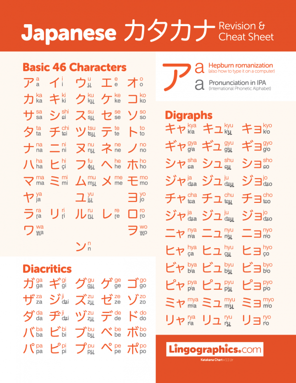

Katakana is one of the essential scripts in the Japanese language, complementing hiragana and kanji.
This phonetic system is particularly used for foreign words, loanwords, onomatopoeia, and the names of
plants
and animals. Understanding katakana is crucial for any beginner looking to navigate the Japanese
language.

A list of all katakana characters
Why Learn Katakana?
Understanding Loanwords: Many modern Japanese terms come from foreign languages, especially
English. Katakana helps you read these words accurately, such as “コンピュータ” (konpyūta) for "computer."
Pronunciation Guide: Like hiragana, katakana represents sounds rather than meanings, aiding
learners in mastering pronunciation and sound distinctions in Japanese.
Enhanced Reading Skills: Knowing katakana allows you to read menus, product labels, and
signage, providing a more comprehensive understanding of everyday Japanese.
Tips for Learning Katakana
Mnemonics: Develop creative associations for each character. For example, the character シ
(shi) resembles a "sheep" in profile, making it easier to remember.
Flashcards: Create flashcards to practice recognition and pronunciation. Review them
regularly to strengthen your memory.
Writing Practice: Consistent writing helps cement your knowledge. Focus on correct stroke
order to build good handwriting habits from the start.
Interactive Resources: Use children’s books, games, or apps that feature katakana. Engaging
with fun materials makes learning enjoyable and practical.
Online Tools: Explore language-learning apps and websites that focus on katakana through
interactive exercises, quizzes, and pronunciation guides.
Learning katakana is a vital step in mastering Japanese. With practice and the right strategies, you’ll
enhance your reading and pronunciation skills, making your language journey richer and more rewarding.
Dive in,
and enjoy the process of discovery!